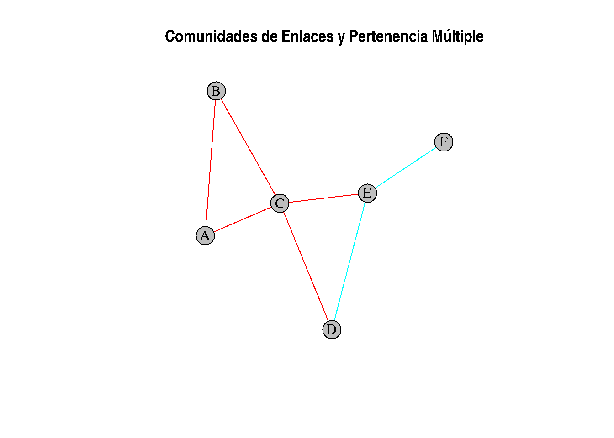
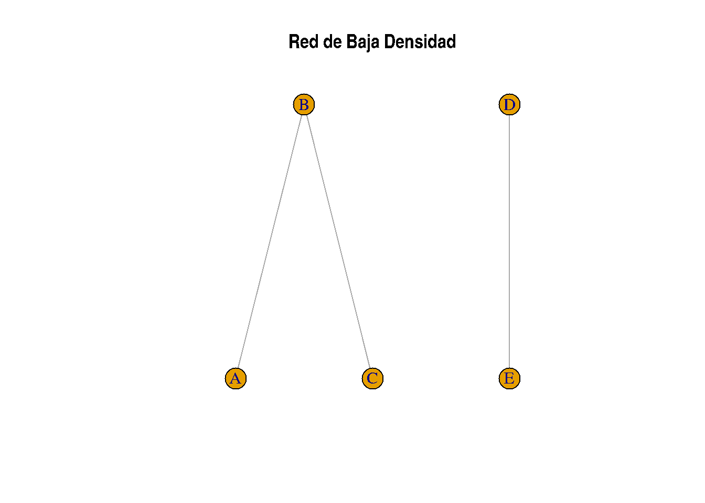
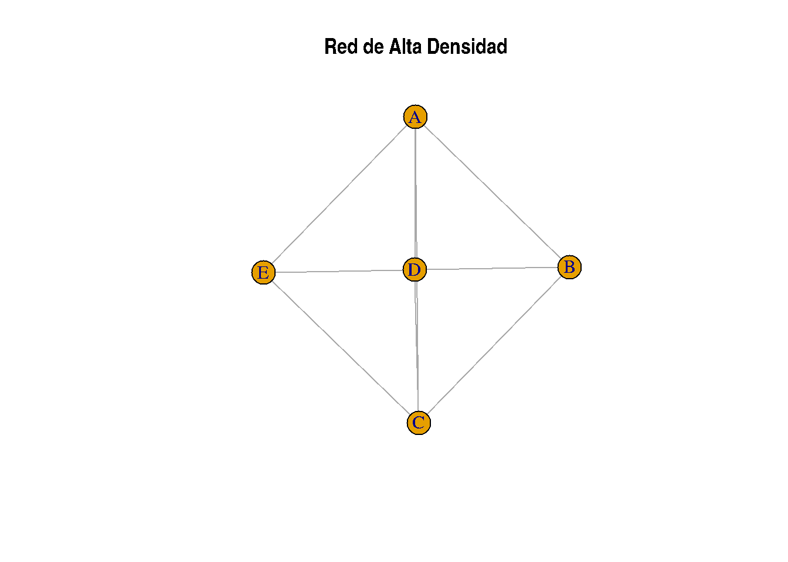

Partición de grafos (II). Clustering basado en enlaces
Análisis de Comunidades en Redes Biológicas con LinkComm
El análisis de comunidades en redes es una herramienta poderosa para entender la estructura de redes complejas. En redes biológicas como las redes de interacción proteína-proteína (PPI), redes de co-expresión génica o redes metabólicas, identificar comunidades revela grupos de nodos que interactúan fuertemente entre sí, lo cual es crucial para comprender funciones biológicas y patológicas. LinkComm es un algoritmo de clustering basado en enlaces, que se enfoca en la agrupación de enlaces en lugar de nodos, útil especialmente en redes biológicas complejas.
Destaca la abilidad de encontrar un nodo en multiples comunidades, cosa que puede ocurrir en la naturaleza mucho.
linkcomm
¿Cómo Funciona LinkComm?
El algoritmo LinkComm consta de dos pasos clave: 1. Cálculo de la Similitud de Enlaces: Calcula la similitud entre los enlaces de la red, basada en los nodos comunes que comparten. 2. Agrupación de Enlaces mediante Clustering Jerárquico: Utilizando el cálculo de similitudes, LinkComm agrupa los enlaces mediante clustering jerárquico, visualizándolos en un dendrograma. Posteriormente, se corta el dendrograma donde la densidad de partición es máxima para obtener las comunidades definitivas.
Cálculo de la Similitud de Enlaces
La similitud entre los enlaces \((A, B)\) y \((A, C)\) se basa en el número de nodos adyacentes que comparten \(B\) y \(C\), normalizado por el total de nodos adyacentes a \(B\) y \(C\). Para ello, se usa la siguiente fórmula basada en el trabajo de Ahn et al. (2010):
Donde: - \(N(X)\) representa el conjunto de nodos adyacentes a \(X\). - El numerador \(|N(B) \cap N(C)|\) cuenta cuántos nodos comparten \(B\) y \(C\). - El denominador \(|N(B) \cup N(C)|\) cuenta el total de nodos únicos asociados a \(B\) y \(C\).
Ejemplos de Similitudes
Para crear los ejemplos, nos hace falta una funcion para dibujar las redes:
# Load igraph packagelibrary(igraph)
Attaching package: 'igraph'
The following objects are masked from 'package:stats':
decompose, spectrum
The following object is masked from 'package:base':
union
# Function to generate and plot the networkgenerate_network <-function(edges, highlight_edges) {# Create the graph g <-make_graph(edges, directed =FALSE)# Assign edge colors edge_colors <-rep("gray", ecount(g))# Get edge names for comparison edge_names <-apply(as_edgelist(g), 1, function(x) paste(sort(x), collapse ="-"))# Highlight specified edgesfor (i inseq_along(highlight_edges)) { edge_to_highlight <-paste(sort(highlight_edges[[i]]), collapse ="-") edge_colors[which(edge_names == edge_to_highlight)] <-c("blue", "red")[i] }# Plot the graphplot(g, edge.color = edge_colors, vertex.size =25, vertex.label.color ="black",vertex.color ="lightblue", main ="Network Visualization")}
Agrupación de Enlaces mediante Clustering Jerárquico
Una vez que se han calculado las similitudes para todos los pares de enlaces, estas se almacenan en una matriz de distancias que se utiliza para realizar el clustering jerárquico. Es importante tener en cuenta que, al tratarse de pares contra pares en lugar de nodos contra nodos, esta matriz de distancias puede volverse bastante grande.
Como de grande puede ser esta matriz?
Nota sobre el Uso de Memoria al Calcular Similitudes entre Enlaces
Cuando pasamos de analizar combinaciones de nodos a combinaciones de enlaces, los requisitos de memoria aumentan significativamente. Esto se debe a que ahora trabajamos con una matriz donde cada fila y columna corresponde a un enlace, en lugar de un nodo. El número de enlaces en una red suele crecer mucho más rápido que el número de nodos, lo que genera una matriz más grande para almacenar.
A continuación, comparamos el tamaño de la matriz de adyacencia de nodos con la matriz de similitud de enlaces. Para simplificar, asumimos que la red es no dirigida y que los enlaces son únicos (sin autoenlaces ni enlaces repetidos).
1. Matriz de Adyacencia de Nodos
Para un grafo con \(n\) nodos: - La matriz de adyacencia es de tamaño \(n \times n\), lo que significa que tiene \(n^2\) elementos. - Memoria requerida en R: Cada elemento ocupa típicamente 8 bytes (tipo de dato numérico).
2. Matriz de Similitud de Enlaces
Para un grafo con \(n\) nodos: - El número máximo de enlaces es \(\binom{n}{2} = \frac{n(n-1)}{2}\). - La matriz de similitud de enlaces es de tamaño \(e \times e\), donde \(e\) es el número de enlaces. - Memoria requerida: Nuevamente, cada elemento ocupa 8 bytes.
Veamos cálculos para redes con 1,000, 10,000 y 100,000 nodos, suponiendo que cada nodo tiene, en promedio, 10 enlaces (un supuesto razonable para muchas redes biológicas).
Ejemplo 1: 1,000 Nodos
Número de enlaces: \(e = 10 \cdot n / 2 = 10,000 / 2 = 5,000\).
Matriz de adyacencia de nodos: \(1,000 \times 1,000 = 1,000,000\) elementos (\(1,000,000 \times 8\) bytes = 8 MB).
Matriz de similitud de enlaces: \(5,000 \times 5,000 = 25,000,000\) elementos (\(25,000,000 \times 8\) bytes = 200 MB).
Ejemplo 2: 10,000 Nodos
Número de enlaces: \(e = 10 \cdot n / 2 = 100,000 / 2 = 50,000\).
Matriz de adyacencia de nodos: \(10,000 \times 10,000 = 100,000,000\) elementos (\(100,000,000 \times 8\) bytes = 800 MB).
Matriz de similitud de enlaces: \(50,000 \times 50,000 = 2,500,000,000\) elementos (\(2,500,000,000 \times 8\) bytes = 20 GB).
Ejemplo 3: 100,000 Nodos
Número de enlaces: \(e = 10 \cdot n / 2 = 1,000,000 / 2 = 500,000\).
Matriz de adyacencia de nodos: \(100,000 \times 100,000 = 10,000,000,000\) elementos (\(10,000,000,000 \times 8\) bytes = 80 GB).
Matriz de similitud de enlaces: \(500,000 \times 500,000 = 250,000,000,000\) elementos (\(250,000,000,000 \times 8\) bytes = 2,000 GB o ~2 TB).
Implicaciones
La matriz de similitud de enlaces crece cuadráticamente con el número de enlaces, lo que genera enormes requisitos de memoria incluso para redes de tamaño moderado.
En contraste, la matriz de adyacencia de nodos crece cuadráticamente con el número de nodos, lo cual suele ser más manejable para grafos dispersos.
Conclusión
Estos cálculos subrayan la necesidad de gestionar cuidadosamente los recursos de memoria y cómputo al trabajar con similitudes entre enlaces en redes grandes. Técnicas como el uso de almacenamiento disperso (sparse matrix) o el enfoque en un subconjunto de enlaces pueden ayudar a mitigar estos desafíos.
A partir de este matriz, se construye un dendrograma, que organiza los enlaces según su similitud.
Sin embargo, para identificar las comunidades en la red, es necesario cortar el dendrograma a una altura específica, conocida como el punto de corte. Todas las ramas que se encuentran por debajo del punto de corte, es decir, los enlaces, se agrupan para formar comunidades.
Un aspecto clave de este enfoque es que los enlaces, y no los nodos, son los objetos que se agrupan. Esto tiene una implicación importante: un mismo nodo puede estar presente en múltiples enlaces, lo que significa que puede pertenecer a más de una comunidad al mismo tiempo. Este comportamiento es diferente de otros métodos de partición de grafos, donde cada nodo pertenece exclusivamente a una única comunidad. Aquí, la pertenencia múltiple refleja la naturaleza compleja y sobrepuesta de las interacciones en redes reales, como las redes biológicas o sociales.
Por ejemplo:
- Si un nodo está conectado a diferentes grupos de nodos mediante enlaces que se asignan a comunidades distintas, ese nodo compartirá funciones o roles en múltiples contextos dentro de la red.
Representación Visual en R
El siguiente ejemplo ilustra este punto mostrando cómo cortar el dendrograma genera comunidades de enlaces, y cómo un nodo puede pertenecer a varias comunidades:
---------------------
Welcome to dendextend version 1.19.0
Type citation('dendextend') for how to cite the package.
Type browseVignettes(package = 'dendextend') for the package vignette.
The github page is: https://github.com/talgalili/dendextend/
Suggestions and bug-reports can be submitted at: https://github.com/talgalili/dendextend/issues
You may ask questions at stackoverflow, use the r and dendextend tags:
https://stackoverflow.com/questions/tagged/dendextend
To suppress this message use: suppressPackageStartupMessages(library(dendextend))
---------------------
Attaching package: 'dendextend'
The following object is masked from 'package:stats':
cutree
# Create a sample networkedges <-matrix(c("A", "B", "A", "C", "B", "C", "C", "D", "C", "E", "D", "E", "E", "F"), ncol =2, byrow =TRUE)g <-graph_from_edgelist(edges, directed =FALSE)# Generate all edge pairsedge_list <-as_edgelist(g)edge_pairs <-combn(1:ecount(g), 2)# Calculate similarities between all pairs of edgessimilarities <-apply(edge_pairs, 2, function(pair) { e1 <- edge_list[pair[1], ] # First edge e2 <- edge_list[pair[2], ] # Second edge# Neighbors of nodes in both edges nodes_e1 <-unique(unlist(neighborhood(g, order =1, nodes = e1))) nodes_e2 <-unique(unlist(neighborhood(g, order =1, nodes = e2)))# Calculate similaritylength(intersect(nodes_e1, nodes_e2)) /length(union(nodes_e1, nodes_e2))})# Build a symmetric similarity matrixsim_matrix <-matrix(0, nrow =ecount(g), ncol =ecount(g))for (i inseq_len(ncol(edge_pairs))) { sim_matrix[edge_pairs[1, i], edge_pairs[2, i]] <- similarities[i] sim_matrix[edge_pairs[2, i], edge_pairs[1, i]] <- similarities[i] # Symmetric}diag(sim_matrix) <-1# Self-similarity is 1# Convert similarity to distancedist_matrix <-as.dist(1- sim_matrix)# Perform hierarchical clusteringhc <-hclust(dist_matrix, method ="complete")# Plot the dendrogramdd <-as.dendrogram(hc)labels(dd) <-apply(edges, 1, function(x) paste(x[1], x[2], sep="_"))[c(6,7,1,5,4,2,3)]plot(dd, main ="Dendrograma de Enlaces", xlab ="Enlaces", ylab ="Altura", sub ="")# Cut the tree at a specific heightcut_height <-0.5# rect.hclust(hc, h = cut_height, border = "red") # Highlight cut branchesabline(h = cut_height, col ="blue", lty =2)
# Get clusters and Assign clusters to edgesclusters <-cutree(hc, h = cut_height)E(g)$community <- clustersedge_colors <-rainbow(length(unique(clusters)))[clusters]# Plot the network with edge communitiesplot(g, edge.color = edge_colors, vertex.color ="gray", vertex.label.color ="black",main ="Comunidades de Enlaces y Pertenencia Múltiple")

# Check node membershipsnode_comms <-list()for (e in1:ecount(g)) { edge <-ends(g, e)for (node in edge) { node_comms[[node]] <-c(node_comms[[node]], clusters[e]) }}node_comms <-lapply(node_comms, unique) # Ensure unique memberships per nodeprint(node_comms)
Clustering jerárquico de enlaces: Se agrupan los enlaces según su similitud.
Corte del dendrograma: El corte del árbol asigna cada enlace a una comunidad.
Asignación múltiple de nodos: Los nodos se asocian a todas las comunidades de los enlaces en los que participan. Esto genera una estructura de pertenencia múltiple.
Visualización: Los colores de los enlaces representan las comunidades, mientras que los nodos muestran cómo pueden participar en múltiples comunidades.
Esta técnica es especialmente útil para analizar redes biológicas, donde las proteínas o genes a menudo participan en múltiples funciones o procesos interrelacionados.
Densidad de Partición y Corte del Dendrograma
Hay que cortar el árbol en un punto específico, determinado por donde se maximiza la densidad de partición.
Densidad de Partición
La densidad de partición es una medida que evalúa qué tan densamente están conectados los conjuntos de enlaces (aristas) dentro de una red. A diferencia de las métricas centradas en los nodos, la densidad de partición se enfoca en la densidad interna de los subconjuntos de enlaces (es decir, comunidades de aristas) y permite cuantificar la cohesión de estas comunidades. Su definición, basada en la sección de métodos de Ahn et al. (2010), es la siguiente:
Definición de Densidad de Partición
Partición de la Red:
Para una red con \(M\) enlaces (aristas), una partición \(\{P_1, \dots, P_C\}\) divide los enlaces en \(C\) subconjuntos, donde cada subconjunto \(P_c\) tiene \(m_c = |P_c|\) enlaces y \(n_c\) nodos.
Densidad Interna de Cada Subconjunto \(P_c\):
La densidad de partición\(D_c\) de un subconjunto \(P_c\) se define como: \[
D_c = \frac{m_c - (n_c - 1)}{\frac{1}{2}n_c(n_c - 1) - (n_c - 1)}
\]
Numerador:
\(m_c\): Número actual de enlaces en \(P_c\).
\(n_c - 1\): Número mínimo de enlaces necesarios para conectar \(n_c\) nodos.
\(m_c - (n_c - 1)\): Exceso de enlaces por encima del mínimo necesario, representando “densidad” dentro de la comunidad.
Denominador:
\(\frac{1}{2}n_c(n_c - 1)\): Número máximo de enlaces posibles para \(n_c\) nodos (un subgrafo completamente conectado).
\(n_c - 1\): Número mínimo de enlaces.
Esto normaliza \(m_c\), asegurando que \(D_c\) esté entre 0 y 1:
\(D_c = 0\): Cuando \(P_c\) está mínimamente conectado.
\(D_c = 1\): Cuando \(P_c\) está completamente conectado.
Casos Especiales:
\(D_c = 0\) si \(n_c = 2\), ya que no es posible ninguna estructura interna más allá de un solo enlace.
Densidad de Partición Total de la Red:
La densidad de partición\(D\) para toda la red es el promedio ponderado de \(D_c\) para todos los subconjuntos \(\{P_1, \dots, P_C\}\), donde el peso depende de la fracción de enlaces en cada subconjunto: \[
D = \frac{1}{M} \sum_{c=1}^C m_c D_c
\]
\(m_c/M\): Fracción de los enlaces totales presentes en el subconjunto \(P_c\).
Esto asegura que \(D\) capture la tendencia general de la red hacia subconjuntos densamente conectados.
Intuición
La densidad de partición evalúa qué tan bien los enlaces están agrupados en comunidades cohesivas y densamente conectadas, en comparación con el rango de conectividad posible para cada grupo.
A diferencia de la modularidad, la densidad de partición no depende de un modelo nulo y mide directamente la conectividad interna de las comunidades.
Ejemplos: Redes con Alta y Baja Densidad
Ambas redes tendrán los mismos nodos, pero diferentes configuraciones de enlaces para ilustrar cómo cambia la densidad de partición.
Red con Baja Densidad
Nodos: A, B, C, D, E.
Enlaces: A-B, B-C, C-D, D-E (configuración tipo cadena lineal).
library(igraph)# Crear red de baja densidadnodes <-c("A", "B", "C", "D", "E")edges_low <-c("A", "B", "B", "C", "D", "E")low_density_net <-make_graph(edges = edges_low, directed =FALSE)# Crear red de alta densidadedges_high <-c("A", "B", "A", "C", "A", "D", "A", "E","B", "C", "B", "D", "C", "D", "C", "E", "D", "E")high_density_net <-make_graph(edges = edges_high, directed =FALSE)# Visualizar redesplot(low_density_net, main ="Red de Baja Densidad")

plot(high_density_net, main ="Red de Alta Densidad")

Resultados
Red de Baja Densidad: La densidad de partición será baja porque los enlaces forman una estructura lineal con muy pocos enlaces redundantes.
Red de Alta Densidad: La densidad de partición será alta porque los enlaces forman un subgrafo casi completo con muchas conexiones internas.
Referencias:
Ahn, Y. Y., et al. (2010). Link communities reveal multiscale complexity in networks. Nature, 466(7307), 761–764. https://doi.org/10.1038/nature09182
Kalinka, A. T., et al. (2010). The LinkComm R package for community detection. Bioinformatics, 26(19), 2456–2457. https://doi.org/10.1093/bioinformatics/btq449